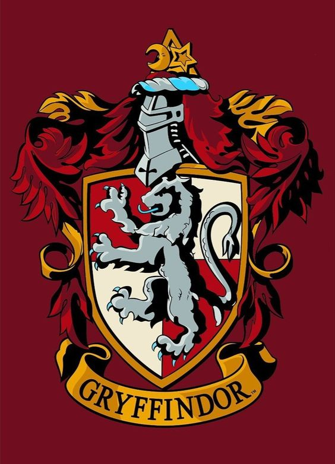
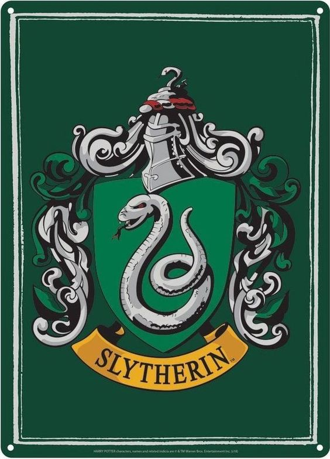
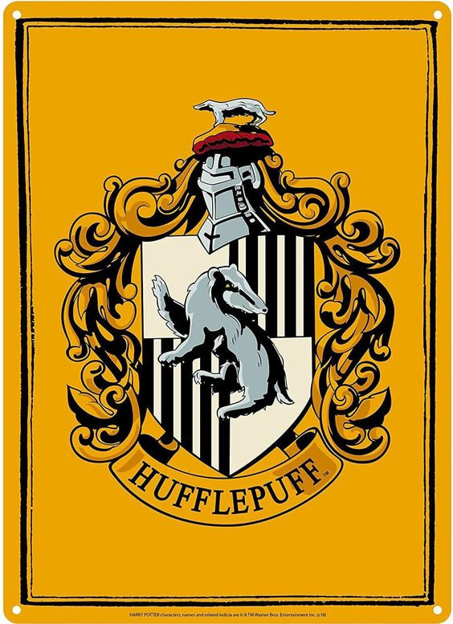
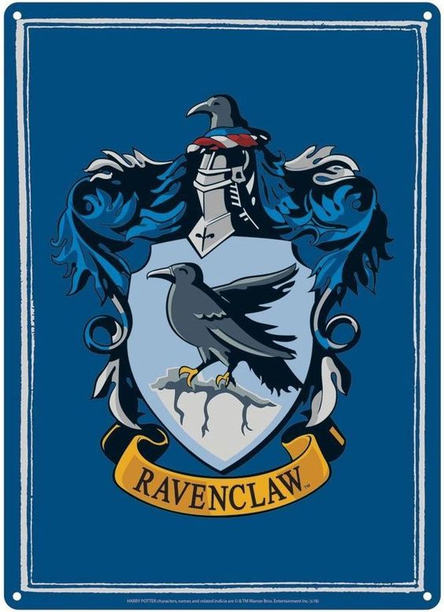

-
Grifinória - Gryffindor
- Vermelho
- Leão
Quem sabe sua morada é a Grifinória Casa onde habitam os corações indômitos. Ousadia, sangue-frio e nobreza Destacam os alunos da Grifinória dos demais.
-
Sonserina - Slytherin
- Verde
- Serpente
Ou quem sabe a Sonserina será a sua casa e ali fará seus verdadeiros amigos. Homens de astúcia que usam quaisquer meios para atingir os fins que antes colimaram.
-
Lufa-Lufa - HufflePuff
- Amarelo
- Texugo
Quem sabe é na Lufa-Lufa que você vai morar. Onde seus moradores são justos e leais. Pacientes, sinceros e sem medo da dor.
-
Corvinal - Ravenclaw
- Azul
- Águia
Ou será a velha e sábia Corvinal. A casa dos que têm a mente sempre alerta. Onde os homens de grande espírito e saber Sempre encontrarão companheiros seus iguais.